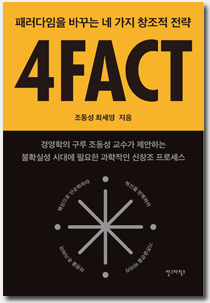

소개
새로운 패러다임을 맞이하는 변화와 혼란의 시기,
한국 경영학의 구루 조동성 교수가 우리가 나아가야 할 방향을 제시한다.
여러 언론에서 '한국 경영학의 구루'라고 소개된 조동성 교수는 현재 인천대 총장으로 재직하고 있다. 36년간 서울대에서 인재들을 양성했을 뿐만 아니라 국내외 다양한 학회와 위원회의 회장, 이사장 직을 맡고 있다. 경영학과 전략에 정통한 '경영의 대가'로도 불리는 조동성은 지속 경영, 혁신경영, 창조경영, 디자인경영, 메커니즘경영 등 경영과 새로운 분야의 융합을 연구해왔다. 연구뿐만 아니라 적극적인 실천을 통해 기업과 국가가 나아가야 하는 방향에 대합 새로운 관점을 제시해온 조동성 교수. 변화와 혼란의 시기를 지나고 있는 한국 사회에 그는 어떤 방법론을 제시할까.
조동성은 새로운 패러다임을 맞이하는 지금에 필요한 것이 '창조적 인재'라고 말한다. 천재나 영재만이 창조적 사고를 해서 세상을 바꾸는 것이 아니라 누구든 이 시대를 이끌 수 있다는 혜안과 해결책이 이책에 제시된다. 지금껏 우리는 창조에 있어서 그 방향성이나 방법을 모르는 것이 당연하다고 생각해왔다. 하지만 조동성은 긴 시간 연구를 통해 과학적으로 창조에 접근할 방안을 내놓았다. 새로운 패러다임을 맞이할 준비를 해야하는 지금, 조동성 교수가 제안하는 새로운 과학적 창조 프로세스를 통해 그 어렵다 는 창조의 벽을 넘어보자.
숨 쉬듯 창조하라. 누구나 쉽게 활용할 수 있는 사칙연산을 통한 창조 실현,
패러다임을 바꾸는 네가지 창조적 전략, 4FACT
첫번째 FACT, 덧셈: 혁신을 반복하라 → 결합, 반복 두번째 FACT, 뺄셈: 기존 습관을 버려라 → 버림, 파괴 세번째 FACT, 곱셈: 차원을 추가하라 → 융합, 통합 네번째 FACT, 나눗셈: 인수분해로 단순화하라 → 득도, 통섭 누구나 이해할 수 있는 쉬운 방법 중에는 '사칙연산'이 있다. 조동성 교수는 사칙연산의 원리를 기반으로 만든 '패러다임을 바꾸는 네가지 창조적 전략'을 제시한다. 복잡하고 어려운 수학도 첫걸음인 사칙연산으로 접근하면 누구나 이해할 수있듯, 4FACT의 네가지 요소를 알면 누구나 창조의 벽을 넘 을 수 있다. 조동성 교수는 4FACT의 원리를 설명하기 위해 레고의 예시를 든다. 레고 블록을 우리가 가진 자원이라 생각하며 반복하고,버리고,추가하고,단순화하는 과학적 전략을 쉽게 배울 수 있다.